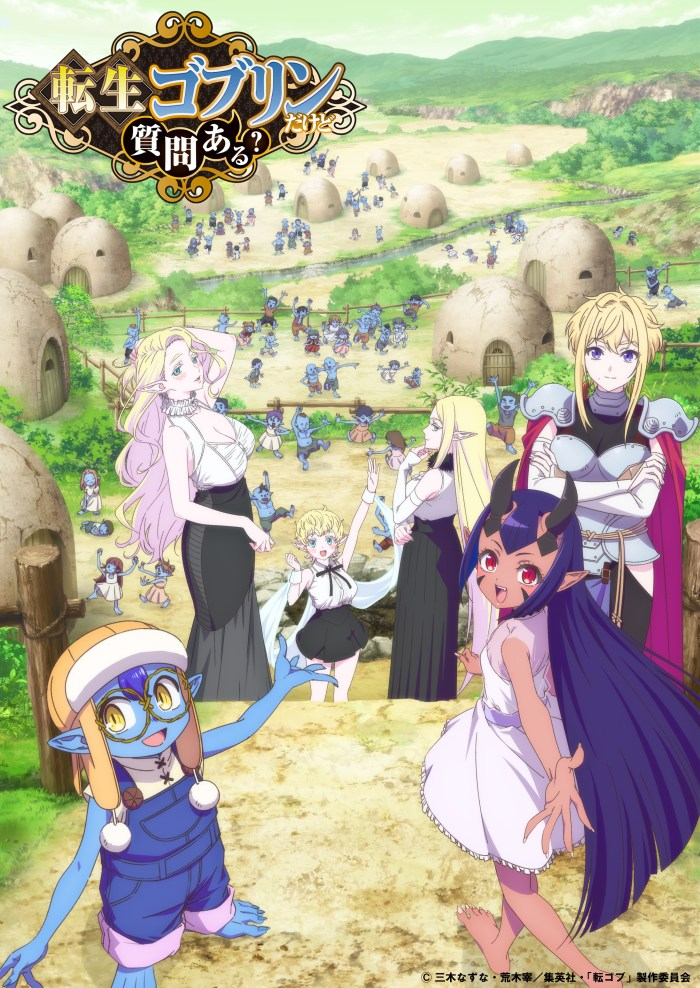

So What's Wrong with Getting Reborn as a Goblin?
So What's Wrong with Getting Reborn as a Goblin? premieres October 5, 2026 on Crunchyroll. Release date, studio and streaming details for Fall 2026.

Release at a glance
- Release
- October 5, 2026
- Where to watch
- Crunchyroll in licensed territories
- Region and timing
- Japan and international platform schedules are separate.
Release details checked October 12, 2026 · Crunchyroll’s Fall 2026 anime lineup · Crunchyroll’s Reincarnated as a Goblin release announcement
Why the starting position matters
Being reborn as a goblin places the protagonist in a role often treated as a minor enemy in fantasy stories. His unusual skill offers a way to challenge that status, but the appeal of the premise is the climb from an initially weak position. The official description does not establish which opponents he will defeat or how quickly that progress will happen.
What changes when the protagonist is reborn as a monster
Many reincarnation stories give their protagonist a familiar human role in a fantasy world. Here, the goblin identity makes status and survival part of the premise from the beginning. The special skill matters because it creates a path upward from a position normally associated with weak enemies. Readers should distinguish that story premise from any unconfirmed claims about later episodes.
When does So What's Wrong with Getting Reborn as a Goblin? premiere?
Crunchyroll lists Episode 1 of So What's Wrong with Getting Reborn as a Goblin? as released on October 5, 2026. Other services may display different regional release dates. The announced streaming platform is Crunchyroll.
What is it about?
An office worker is reincarnated as a goblin with a unique skill and begins a new climb toward power.
What kind of fantasy story is it?
The premise follows an ordinary office worker beginning a second life in a monster's body, rather than arriving in the new world as an established human hero. His unusual skill becomes the starting point for his rise in power. For viewers choosing between Fall 2026 fantasy series, the central hook is the goblin perspective and the challenge of building strength from an initially disadvantaged position.
Where can you watch it?
Announced availability: North America, Central America, South America, Europe, Africa, Oceania, the Middle East, CIS, Indian Subcontinent and Southeast Asia.
Is the protagonist a human hero or a monster?
The premise starts with an office worker reincarnated as a goblin, a creature often treated as a weak opponent in fantasy adventures. The story follows his rise from within that monster identity rather than beginning with an established human hero. The official description does not establish his ultimate rank or the opponents he will face.
More Fall 2026 anime
See the AniNextUp Fall 2026 calendar and our where-to-watch guide for more confirmed releases.
Official source
View the official announcement →
Updated: · Sources, updates & corrections · Report an error
Platform release references: Crunchyroll Episode 1; Prime Video regional listing.